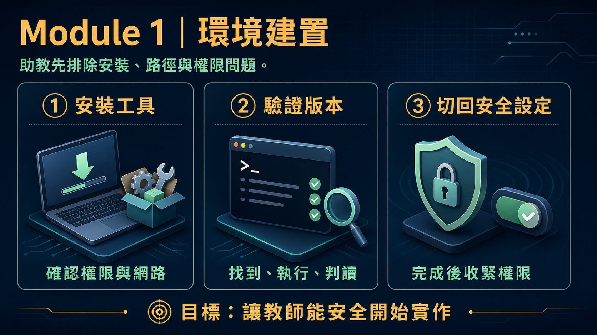
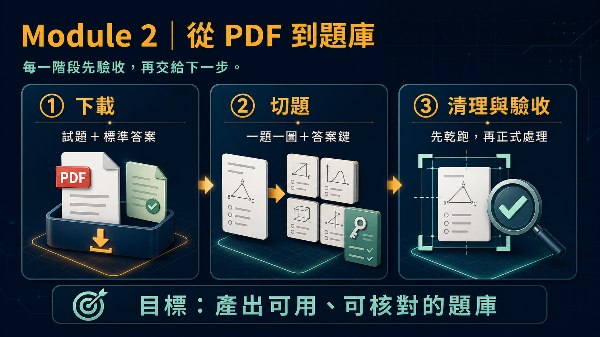
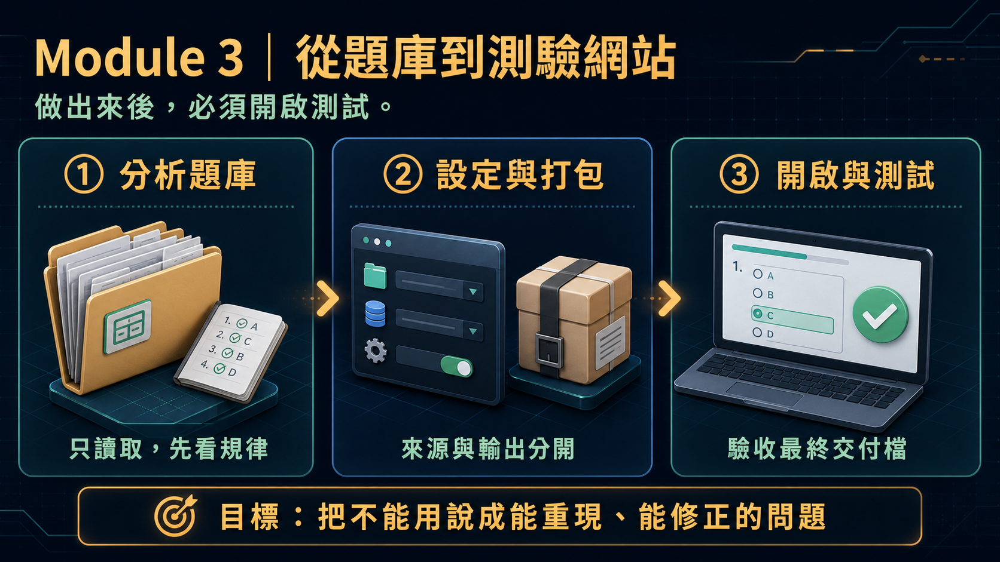

本頁是這場半日助教培訓的完整課程材料：前半部（課程資訊～課後銜接）整理自籌備文件 refs/AI-Agent-助教技能培訓工作坊-執行摘要.md 與 -執行方案.md，說明工作坊定位、培訓目標、對象規模、下午流程與操作檢核、實作範圍與原則、現場支援流程，以及資料安全與角色界線；後半部把同一套培訓精神，具體對應到本站 Module 1～3 這套原為教師設計的實作教材，逐模組列出教師常見卡點、助教應具備的先備知識，以及常見狀況快速對照表，作為「vibe coding 實作」單元的具體練習素材與技術延伸。
本場不是 AI 專家或軟體工程師養成課程，也不訓練助教自行設計教材、命題或評量。訓練重點放在「能不能跟 Codex 討論、從零把一件事講清楚並做出來」，而不是熟記某一套現成工具怎麼呼叫——助教學的是方法，不是特定工具的操作手冊。
| 項目 | 內容 |
|---|---|
| 時間 | 半天，13:00-17:30（12:30 開始報到；14:50-15:10 茶敘休息） |
| 地點 | 南臺科技大學 J棟 J301教室 |
| 講師 | 南臺科大 電子系 楊榮林 教授 |
| 對象 | 由教師或各單位推薦的助教；如有名額，也歡迎具備基本電腦與 AI 使用經驗的行政／辦事同仁及其他有興趣者參與。 |
本工作坊可能依報名狀況開設多個梯次，實際日期與報名連結以各梯次正式公告為準。
下午重點流程（完整版含操作檢核見「四、下午流程與操作檢核」）：
| 時間 | 重點 |
|---|---|
| 13:00-13:25 | 認識 AI Agent 與助教支援角色。 |
| 13:25-14:20 | 建置本機工具與專案資料夾。 |
| 14:20-14:50 | 開啟練習專案並確認執行流程。 |
| 14:50-15:10 | 茶敘休息／未完成環境設定協助。 |
| 15:10-16:10 | vibe coding 實作：建立簡易網頁小工具。 |
| 16:10-17:00 | 測試工具、描述問題與請 AI 修正。 |
| 17:00-17:20 | 常見支援情境與問題處置。 |
| 17:20-17:30 | 回顧、提問與課程收束。 |
本工作坊是一場半日、初階、以個人電腦實作為主的培訓，目的是培養可在第一線協助教師與行政同仁使用 AI Agent 的助教與行政人員。對象以教師或各單位推薦的助教為優先；如有名額，也歡迎具備基本電腦與 AI 使用經驗的行政／辦事同仁及其他有興趣者參與。預計約 30 人，參與者以自己的筆記型電腦獨立操作。
課程以 ChatGPT Codex 為示範工具，但重點不在學習單一平台，而是建立可轉用到其他 AI Agent 的工作方法：說清楚目標、情境、限制與完成標準；讓 AI 協助產生工具；自行找到並執行產出；測試與判讀結果；再逐步修正。
本場不是教材設計、命題或評量設計課程，也不是程式設計師養成、學科內容審查或行政決策課程。它的核心任務是培養能支援教師使用 AI Agent 與簡易 vibe coding 工具的第一線人員，降低非工程背景教師在本機安裝、檔案管理、執行、測試與基本問題排除上的負擔。助教與行政人員的任務是提供技術協助，協助處理環境安裝、專案資料夾、檔案位置、工具啟動、基本測試與問題資訊整理；教材內容、題目品質、學科正確性與行政決定，仍由教師、相關單位或具專業者判斷。
完成本場後，參與者應能在他人需要協助時，先釐清問題位置、蒐集必要資訊，再協助完成下列基本工作：
| 項目 | 執行內容 |
|---|---|
| 優先對象 | 由教師或各單位推薦的助教；如有名額，亦歡迎具基本電腦與 AI 使用經驗的行政／辦事同仁及其他有興趣者。 |
| 建議規模 | 約 30 人。每位參與者使用自己的帳號、筆記型電腦與本機資料夾獨立操作，不安排分組共同產出。 |
| 上課時段 | 12:30 報到；13:00-17:30 上課；14:50-15:10 茶敘休息。 |
| 參與者設備 | 筆記型電腦、電源供應器與可連線網路；電腦需具軟體安裝或更新權限。建議攜帶日後實際支援工作會使用的設備。 |
| 主辦單位準備 | 提供可公開使用的練習專案、練習資料、安裝連結與基本操作指引；現場準備網路、投影與至少一個可協助安裝／登入問題的支援窗口。 |
| 時間 | 單元與帶領重點 | 參與者操作 | 單元檢核點 |
|---|---|---|---|
| 12:30-13:00 | 報到、設備與帳號確認：確認網路、帳號登入、軟體安裝權限與電源。 | 開啟電腦、連線網路、登入必要服務；將問題先依帳號、網路、權限或設備分類。 | 每人知道自己使用的帳號與本機資料夾位置；未完成者列入休息時間協助清單。 |
| 13:00-13:25 | 認識 AI Agent 與助教支援角色：說明 Chatbot／AI Agent、可做與不可直接交給 AI 的工作，以及技術支援的角色界線。 | 以一個日常支援情境，練習把模糊需求補成「目標、情境、限制、完成標準」。 | 能說出至少一項可協助的技術工作與一項須由教師或專業人員確認的工作。 |
| 13:25-14:20 | 建置本機工具與專案資料夾：介紹 VS Code、Python、Node.js、終端機與資料夾的用途，依指引安裝或驗證。 | 建立本次專案資料夾；開啟 VS Code；在終端機執行提供的版本或啟動檢查指令。 | 能在自己的電腦開啟專案資料夾，並截取或記下可供判讀的檢查結果。 |
| 14:20-14:50 | 開啟練習專案並確認執行流程：以主辦單位練習專案示範從檔案到結果的完整路徑。 | 找到來源檔、輸出檔與啟動位置；依步驟開啟網頁或程式，比對畫面是否與預期一致。 | 能指出專案根目錄、主要檔案與執行後結果，且能描述下一步該在哪裡操作。 |
| 14:50-15:10 | 茶敘休息／未完成環境設定協助。 | 休息；尚未完成環境建置者依問題清單接受協助。 | 支援人員優先處理會阻斷下午實作的登入、安裝、權限與網路問題。 |
| 15:10-16:10 | vibe coding 實作：建立簡易網頁小工具，示範如何提出小而可驗證的需求。 | 以主辦單位題目或自己的非敏感情境，建立單一靜態 HTML 小工具。 | 產出至少一個可開啟的 HTML 頁面；能找到其檔案位置並說明工具的用途與限制。 |
| 16:10-17:00 | 測試工具、描述問題與請 AI 修正：示範將「不能用」轉成可重現、可修正的問題描述。 | 測試按鈕、輸入、文字與結果；記錄操作步驟、預期／實際結果與錯誤訊息；請 AI Agent 協助修正後重新測試。 | 完成至少一輪「測試 → 回報 → 修正 → 再測試」，並保留修正前後的差異或紀錄。 |
| 17:00-17:20 | 常見支援情境與問題處置：回顧未來常見的協助請求與升級處理原則。 | 依情境判斷自己可先協助的事項、須交給教師／資訊單位／專業人員的事項，以及需保留的問題資訊。 | 能依「定位、蒐集、分類、最小修正、重新驗證、適當升級」順序處理問題。 |
| 17:20-17:30 | 回顧、提問與課程收束。 | 回顧個人的完成項目與仍需協助的問題；提出最後提問。 | 每人帶走可供日後支援使用的練習專案、問題紀錄方式與下一步。 |
本工作坊「vibe coding 實作」單元使用的 Module 1～3，原本是為非工程背景的大學教師設計的實作教材（把教材轉成練習工具）。助教接觸的是同一套教材，但學習焦點不同——下表整理兩種使用情境的差異：
| 面向 | Module 1～3 原始設計情境（教師） | 本次助教訓練 |
|---|---|---|
| 對象 | 非工程背景大學教師，想把教材做成練習工具 | 由教師或單位推薦的助教，具基本電腦與 AI 使用經驗 |
| 目標 | 產出一份可用的題組與自主練習小工具 | 具備排除環境、操作與常見錯誤的支援能力，不以產出教材為目標 |
| 涵蓋範圍 | 完整跑過從安裝到成品的所有階段 | 聚焦 Module 1～3，且每個模組都以「理解原理、能協助從零重建」為訓練重點 |
| 深度 | 每個模組要求做出完整、可驗收的成果 | 每個模組要求認得住「教師在這裡最容易卡在哪」與「怎麼用最少步驟排除」 |
| 評量重點 | 題目品質、答案正確性、網頁工具是否堪用 | 能否快速定位問題、蒐集必要資訊、提出可驗證的最小修正 |
| 工具操作深度 | 只需要會在 Codex 對話視窗打字下指令 | 除了會下指令，還需要能在終端機直接執行、檢查 Codex 寫出來的腳本與中間產出，驗證結果是否正確，不只是透過 Codex 對話 |
| 資料安全 | 不使用學生個資／完整成績，以教師自身教材為主 | 同樣原則，額外留意：協助排錯過程中不代為判斷教材、題目、評量品質等專業內容 |

教師版 Module 1 讓教師在 Windows 11 筆電上建置 Vibe Coding 與 AI Agent 工作環境，提供三種安裝方式（手動 winget、AI Agent Prompt 法、module1-setup-windows.bat 一鍵安裝）。
module1-setup-windows.bat 後顯示 winget not found。code 命令當時還不在 PATH 上）。gh auth login 卡在瀏覽器登入或一次性代碼輸入。.bat 檔可重複執行、已安裝項目會自動略過。code --version、git --version、node --version、npm --version、uv --version、gh --version、codex --version。.bat／.tar 檔案怎麼解壓縮、「下載」資料夾位置在哪。cd 切換目錄、dir 看檔案清單、以系統管理員身分開啟終端機。winget install --id ... --source winget --exact 這類指令在做什麼、為什麼可能失敗（權限、網路、來源設定）。| 狀況 | 代表什麼 | 助教可以怎麼做 |
|---|---|---|
winget not found | App Installer 未安裝或版本過舊 | 引導開啟 Microsoft Store 安裝／更新 App Installer，完成後重新執行批次檔 |
| 批次檔顯示某工具「已處理」，但版本檢查指令仍說找不到 | PATH 還沒套用到目前這個終端機視窗 | 關閉重開 PowerShell／CMD，再跑一次版本檢查指令 |
| VS Code 裝好了，但 5 個擴充套件沒被安裝 | 同一次執行中 VS Code 才剛裝好，code 命令還不在 PATH 上，批次檔跳過了擴充套件那一步 | 重開終端機後，再執行一次同一支批次檔（可重複執行，已裝項目會自動略過） |
| 學校電腦跳出「你沒有權限安裝此應用程式」 | 帳號沒有系統管理員權限，winget 需要系統管理員／UAC 核准 | 改用「安裝方式一：手動安裝」逐項下載官方安裝檔；必要時請學校 IT 協助，或改用個人電腦 |
| 用 Full access 裝完工具後忘記切回 | Agent 之後執行終端機指令不會再逐步詢問核准 | 提醒教師回到工作設定，改回「先要求核准（Ask for approval）」 |
codex --version 或登入時出現帳號相關錯誤 | 尚未用有 Codex 存取權的 ChatGPT 帳號登入，或該帳號方案／工作區未開通 Codex | 請教師確認登入帳號、方案與工作區狀態，必要時聯繫負責窗口 |
gh auth login 卡住沒反應 | 瀏覽器分頁沒跳出，或一次性代碼視窗被忽略 | 確認瀏覽器有跳出新分頁、代碼是否正確輸入；必要時重新執行指令 |

教師版 Module 2 的目標，是把一份 PDF 考古題轉成「一題一張乾淨圖片 ＋ 標準答案 JSON」的問題集資料夾，整個流程分成下載、切題、清理三個階段，前一階段的輸出就是下一階段的輸入。助教訓練的重點不是背下某個現成工具怎麼呼叫，而是理解這三個階段各自在做什麼、為什麼需要驗收，並具備跟 Codex 討論、從零設計出等效處理流程的能力——這樣不管教師手上換成哪一份考卷、遇到原本沒處理過的版面，助教都能協助把問題從頭想清楚，而不是卡在「這個做法不支援」就沒辦法往下走。
| 階段 | 在做什麼 | 輸入 | 輸出 |
|---|---|---|---|
| ① 下載 | 抓試題＋標準答案 PDF | 學年度、群類 | raw/<year>/*.pdf |
| ② 切題 | 把 PDF 切成一題一張圖，配對答案 | ①的 PDF | repo/<name>/*.png ＋ keys.json |
| ③ 清理 | 裁掉多餘空白、塗掉題號 | ②的 png | 原地覆寫、變乾淨的 png |
keys.json 筆數是否一致，這是每個階段都適用的驗收方法。| 狀況 | 代表什麼 | 助教可以怎麼做 |
|---|---|---|
| 下載到的 PDF 打開一看，群類或科目跟預期不同 | 下載時比對到的群類、科目名稱有誤 | 請教師／Codex 開啟 PDF 肉眼核對，確認無誤才繼續下一步 |
| 某一科目的考卷版面跟原本的處理邏輯對不上（例如共同科目 vs 專業科目） | 原本的處理假設（題數、版面座標）是針對特定範本設計的，換一種版面就可能失敗或誤判 | 協助教師具體描述新版面跟原本的差異，請 Codex 針對這份新考卷重新測量、調整處理邏輯，而不是硬套舊規則 |
| 切完題後檔名或分類標籤跟實際科目對不上 | 輸出的命名規則是先前針對某一類考卷設計的，沒有隨科目調整 | 請教師明確講出這份考卷該用的命名規則，請 Codex 改檔名＋同步改 keys.json 的 key，再進清理階段 |
| 清理乾跑時某張圖出現 0 個或 ≥2 個偵測區塊 | 版面跟預期範本不同，或門檻誤判 | 提醒先停下來人工檢查那張圖，不要直接跳過或硬套用 |
| 清理完後某張圖底部還留一整行不相關的文字 | 這是切題邊界的殘影，不是單純的空白或雜訊，清理階段救不了 | 回頭請 Codex 重新切那一題的圖，不要在清理階段加規則硬修 |
圖片張數跟 keys.json 筆數對不起來 | 切題或答案解析有缺漏 | 請教師／Codex 核對總題數，找出缺哪一題或哪一筆答案 |

教師版 Module 3 從「一個問題集資料夾」出發，用 7 個步驟跟 Codex 討論、逐步設計出一套測驗網頁產生工具。這是整個教師工作坊最吃 prompt 表達能力的一段，也是助教最需要協助教師「把話講清楚」的地方；它同時也是助教工作坊的核心示範：整套訓練希望助教學到的，正是這種「從零跟 AI Agent 討論、設計、做出來」的方法，而不是操作某個已經包好的現成工具。
| 步驟 | 交付物 | 最容易漏掉的明確要求 |
|---|---|---|
① 決定 app/ 放哪 | 設計決策 | app/ 必須是 repo/ 的同層（sibling），不能塞進問題集資料夾裡面 |
| ② 分析問題集資料夾 | analyze_folder.py | 只能讀取、不能修改任何檔案；只用標準函式庫；抓不出檔名規律就別硬湊 |
③ 設計 config.json | 設定檔結構 | 用 assessments 陣列（不是單一物件），才能之後疊加而不用重新設計 |
④ 打造 quiz.html | 學生作答樣板 | 最終交付版本不能用 fetch()（瀏覽器會擋 file:// 下的請求）；開發階段可以先用假資料 + fetch() 測 |
⑤ 寫 build_bundle.py | 打包腳本 | 要支援 --only <examLabel> 增量重建；圖片缺檔只警告、不中斷；印出 Built N/M 總結 |
| ⑥ 驗收 | — | 不要只信任「Codex 說做完了」，要實際雙擊打開測試 |
| ⑦ 教師端彙整頁 | report-aggregator.html | 純前端、不上傳任何資料，能拖放多份 CSV 合併統計 |
app/ 與 repo/ 同層的規則）。app/quiz.html（可編輯原始碼版本，還在用 fetch()）而不是 dist/<examLabel>_quiz.html（最終交付版本），導致畫面空白、按鈕沒反應。config.json 裡漏寫 "repoDir": "."（省略等同預設值 "repo"，會找不到圖片資料夾）。config.json 之後沒有重跑 build_bundle.py，以為 dist/ 裡的檔案會自動更新。examLabel 跟既有的撞名，互相覆蓋。Built N/M 出現 N<M，代表有測驗打包失敗但教師沒注意到。app/ 是 repo/ 的 sibling、dist/<examLabel>_quiz.html 才是最終雙擊即用檔案、config.json 是可疊加的 assessments 陣列。# 測試「可編輯原始碼」版本要先開本機伺服器（dist/ 版本不需要）
cd module3/app && python3 -m http.server
# 只重建剛加的那一筆測驗，不用整批重打包
python3 build_bundle.py --only <examLabel>Built N/M assessments」這行輸出：N<M 時要往上找警告訊息，通常是路徑欄位寫錯。| 狀況 | 代表什麼 | 助教可以怎麼做 |
|---|---|---|
分析腳本找不到 keys.json，或找到不只一個 .json 檔 | 資料夾裡的 JSON 檔不只一個、或完全沒有 | 請 Codex 支援明確指定檔名的參數（如 --keys-file），再重跑 |
repoDir 分析不出來，或找不到圖片資料夾 | 圖片位置偵測邏輯不夠周全 | 確認圖片實際路徑，請 Codex 支援明確指定資料夾的參數（如 --repo-dir），再重跑 |
filenamePattern 抓出來的分組看起來像雜訊 | 檔名剛好符合推論規則，但差異不代表有意義的分類 | 不要硬寫進 config.json，直接省略，確認樣板有「退回逐題顯示原始檔名」的備案 |
打包印出「Built N/M assessments」，N < M | 至少一筆測驗打包失敗 | 往上找對應的警告訊息，通常是路徑欄位寫錯 |
新加的 examLabel 跟既有某一筆撞名 | examLabel 同時決定輸出檔名，撞名會互相覆蓋 | 加新的一筆之前，先看一眼 config.json 既有陣列用過哪些名字 |
直接雙擊 app/quiz.html，畫面空白或按鈕沒反應 | 那是「可編輯原始碼」版本，還在用 fetch()，瀏覽器擋掉 file:// 下的請求 | 提醒改開 dist/<examLabel>_quiz.html；真的要測原始碼版本才需要開本機伺服器 |
改了 config.json，dist/ 裡的檔案沒變 | dist/*.html 是打包當下的快照，不會即時更新 | 提醒重跑一次打包程式（可只加 --only 那一筆） |
| 能力類別 | 具體內容 | 主要對應模組 |
|---|---|---|
| Windows 檔案總管與路徑 | 資料夾結構、絕對／相對路徑、副檔名顯示、壓縮解壓縮（.tar／.zip）、下載資料夾管理 | Module 1（工具安裝）、Module 2／3（範例資料與教材壓縮檔） |
| 軟體安裝與權限排除 | winget 基本概念、系統管理員權限、UAC、PATH 概念 | Module 1 |
| PowerShell／CMD 基本操作 | 開啟終端機、cd 切換目錄、dir 查看檔案、執行指令、讀懂常見錯誤訊息 | Module 1（驗證安裝）、Module 2／3（直接執行、檢查 Codex 寫出來的腳本與中間產出） |
| AI Agent 工作流程理解 | Chat／Work／Codex 的差異、Prompt 與 Task 的差異、Ask for approval 與 Full access 的差異、常見失敗原因（prompt 不明確／路徑錯誤／檔案不存在／權限不足／工具未安裝／執行中斷） | 全模組 |
| 協助教師寫 prompt、從零設計工具的能力 | 目標／情境／限制／完成標準四要素檢查、拆解過大任務、協助把「這個做法為什麼失敗」講清楚並提出具體修正需求 | Module 2、Module 3（尤其明顯） |
| 成果檔案管理 | 找到 AI Agent 產出的檔案位置、下載／搬移／命名、辨識副檔名（.html／.json／.png／.pdf／.docx／.xlsx）、協助開啟與初步檢查 | Module 1（四項驗證任務）、Module 2（raw/／repo/）、Module 3（app/／dist/／config.json） |
下表是跨模組通用的 Windows／命令列／AI Agent 錯誤訊息判讀，各模組專屬狀況請見上方對應章節的「常見狀況快速對照表」。
| 錯誤訊息／現象 | 代表什麼 | 助教怎麼處理 |
|---|---|---|
'code'／'git'／'node' is not recognized... | 該指令不在 PATH 裡，通常是還沒重開終端機，或安裝失敗 | 關閉重開終端機再試一次；仍失敗就逐一跑對應的版本檢查指令排查 |
| Access is denied／存取被拒絕 | 權限不足，可能需要系統管理員身分執行 | 改用系統管理員身分開啟 PowerShell，或改走手動安裝 |
| 瀏覽器打開下載頁面顯示 403／無法連線 | 網路限制或防火牆擋下特定網站 | 確認網路連線、換一個網路環境，或請教師改用可連線的裝置 |
| 雙擊 HTML 檔案畫面空白、按鈕沒反應 | 很可能開到「可編輯原始碼版本」而非打包好的 dist/ 版本，該版本仍在用 fetch() 但瀏覽器擋掉了 file:// 下的請求 | 確認開的是 dist/<examLabel>_quiz.html；真的要測原始碼版本才需要開本機伺服器 python3 -m http.server |
| Codex 說「找不到檔案／資料夾」 | 路徑寫錯，或教師目前所在的工作資料夾跟指令講的路徑對不起來 | 請教師在對話裡明確講出完整或正確的相對路徑，必要時請 Codex 先列出目前資料夾內容確認 |
| Codex 產出的東西跟預期差很多，或像是重新發明了另一套做法 | Prompt 沒有把目標、情境、限制、完成標準講清楚，只給了籠統的一句話 | 提醒教師用四要素重新表達需求，把關鍵限制（例如檔名規則、資料夾位置、輸出格式）具體講出來，而不是留給 Codex 自己猜 |
| 任務執行到一半中斷、或很久沒有回應 | 網路不穩，或任務範圍太大導致執行過久 | 確認網路狀態；必要時協助把任務拆成更小的步驟重新請 Codex 做 |
遇到問題時，助教或行政人員可依下列順序處理，避免在未釐清問題前反覆嘗試：
教師常見的模糊 prompt 像是「幫我做一個測驗網頁」。助教可以用「目標、情境、限制、完成標準」四個要素引導教師補完：
| 要素 | 檢查問題 | 示範補完 |
|---|---|---|
| 目標 | 最終想要什麼？誰會用？ | 「做出一個學生自己打開作答、老師事後能收成績的網頁」 |
| 情境 | 現有素材、資料夾位置是什麼？ | 「我手上有 module3/repo/114 這個問題集資料夾（圖片 + keys.json）」 |
| 限制 | 有什麼技術限制不能違反？ | 「最終檔案要能雙擊開啟，不能架伺服器、不能用 fetch()」 |
| 完成標準 | 怎麼知道做完了、做對了？ | 「我要能實際打開、輸入姓名、作答、送出看到分數才算完成」 |
對照「四、下午流程與操作檢核」的時段，助教可依下列時段調整巡場焦點：
| 課程時段 | 對應階段 | 助教巡場重點 |
|---|---|---|
| 13:25–14:20 建置本機工具與專案資料夾 | 對應 Module 1 | 巡視是否有人卡在 winget、系統管理員權限或 PATH 問題 |
| 14:20–14:50 開啟練習專案並確認執行流程 | 熟悉 Module 1～3 教材的資料夾結構 | 確認每個人找得到專案根目錄、主要檔案與執行位置 |
| 15:10–16:10 vibe coding 實作 | 可取材自 Module 2／3 | 巡視 prompt 是否講清楚規則、app/ 位置、dist/ 與原始碼版本是否混淆 |
| 16:10–17:00 測試工具、描述問題與請 AI 修正 | 驗收 | 確認大家測的是最終交付版本，並完整走過一輪「測試 → 回報 → 修正 → 再測試」 |
以下清單可直接列印或勾選使用。
module1-setup-windows.batwinget not found 或系統管理員權限問題keys.json 筆數是否一致app/ 資料夾放在 repo/ 的同層而非裡面app/quiz.html 而非 dist/ 裡的檔案examLabel 是否與既有的撞名config.json 要重新執行打包程式Built N/M 裡 N 是否等於 Mdist/ 成品與教師端彙整頁課後可保留本次的練習專案、問題紀錄格式與安裝指引，作為日後支援教師、實驗室或教學助理的起點。當教師提出需求時，受訓者不必承擔內容決策，而能協助確認設備與環境、定位檔案、啟動工具、完成基本測試，以及把尚未排除的問題整理成可交接的資訊。
透過這項培訓，可為未來工作坊建立助教人才，也可讓參與教師工作坊的教師先替實驗室或教學助理完成前置技術訓練。目標是讓教師能專注於教學與專業工作，而由具備共同技術基礎的助教或行政人員協助處理環境、檔案、執行與初步測試問題。
本場的預期價值，是建立一批具有共同技術語言與基本處置方法的支援人力，降低非工程背景教師使用 AI Agent 時的起步門檻，讓教師把更多時間放在教學與專業工作上。
本頁整合改寫自 refs/AI-Agent-助教技能培訓工作坊-執行摘要.md 與 -執行方案.md 這兩份通用版規劃文件的完整內容（工作坊定位、培訓目標、對象規模、下午流程、實作原則、支援流程、資料安全），並把同一套培訓精神具體對應到本站 Module 1～3 的實際教材，讓訓練內容與教師實際會遇到的操作情境完全一致。這兩份原始規劃文件仍保留在 refs/ 資料夾中作為背景脈絡與原則性參考。
「五、實作範圍與操作原則」與「七～九、Module 1～3 助教學習重點」所描述的 vibe coding 練習，可直接使用本站既有的教材作為具體素材，不需要另外準備：
This page is the complete course material for this half-day TA training. The first half (Course Information through After the Workshop) is compiled from the planning documents refs/AI-Agent-助教技能培訓工作坊-執行摘要.md and -執行方案.md, covering the workshop's positioning, training goals, audience and scale, afternoon schedule and checkpoints, hands-on scope and principles, on-site support workflow, and data safety and role boundaries. The second half applies the same training spirit concretely to Modules 1–3 on this site — hands-on material originally written for faculty — breaking down where faculty commonly get stuck module by module, what TAs should know beforehand, and quick troubleshooting tables, as concrete practice material and a technical extension for the "vibe coding build" unit.
This session is not meant to train AI experts or software engineers, nor to train TAs to design teaching materials, questions, or assessments themselves. The training emphasis is on "can you discuss something with Codex from scratch, state it clearly, and get it built" — not memorizing how to invoke one specific packaged tool. TAs learn a method, not an operating manual for a particular tool.
| Item | Details |
|---|---|
| Time | Half day, 13:00-17:30 (check-in from 12:30; tea break 14:50-15:10) |
| Venue | Room J301, Building J, Southern Taiwan University of Science and Technology |
| Instructor | Prof. Rong-Lin Yang, Department of Electronic Engineering, STUST |
| Audience | TAs recommended by faculty or their units; if seats remain, administrative staff with basic computer and AI experience and other interested participants are also welcome. |
This workshop may run multiple cohorts depending on registration; the actual date and registration link for each cohort follow that cohort's official announcement.
Afternoon overview (full version with checkpoints in "4. Afternoon Schedule & Checkpoints"):
| Time | Focus |
|---|---|
| 13:00-13:25 | Understanding AI Agents and the TA support role. |
| 13:25-14:20 | Setting up local tools and the project folder. |
| 14:20-14:50 | Opening the practice project and confirming the run flow. |
| 14:50-15:10 | Tea break / help for anyone still finishing environment setup. |
| 15:10-16:10 | Vibe coding build: create a simple web tool. |
| 16:10-17:00 | Test the tool, describe issues, and ask AI to fix them. |
| 17:00-17:20 | Common support scenarios and how to handle them. |
| 17:20-17:30 | Recap, questions, and wrap-up. |
This is a half-day, introductory, hands-on training on personal laptops, aimed at building TAs and administrative staff who can provide first-line support for faculty and colleagues using AI Agents. The priority audience is TAs recommended by faculty or their units; if seats remain, administrative staff with basic computer and AI experience and other interested participants are also welcome. Expected scale is about 30 people, each working independently on their own laptop.
The course uses ChatGPT Codex as the demonstration tool, but the focus isn't learning one specific platform — it's building a working method that transfers to other AI Agents: state the goal, context, constraints, and completion criteria clearly; let AI help produce a tool; find and run the output yourself; test and interpret the results; then revise step by step.
This session is not a course on designing teaching materials, writing questions, or assessment design, nor is it a software-engineer training program, subject-matter review, or administrative-decision course. Its core task is building first-line staff who can support faculty using AI Agents and simple vibe-coding tools, lowering the burden non-engineering faculty face with local installation, file management, execution, testing, and basic troubleshooting. TAs and administrative staff provide technical assistance — helping with environment installation, project folders, file locations, launching tools, basic testing, and organizing problem information; the content of teaching materials, question quality, subject-matter accuracy, and administrative decisions remain the responsibility of faculty, the relevant unit, or subject-matter experts.
After this session, participants should be able to first clarify where a problem is and gather the necessary information whenever someone needs help, then assist with the following basic tasks:
| Item | Details |
|---|---|
| Priority audience | TAs recommended by faculty or their units; if seats remain, administrative staff with basic computer and AI experience and other interested participants are also welcome. |
| Suggested scale | About 30 people. Each participant works independently with their own account, laptop, and local folder; no group deliverables. |
| Schedule | Check-in at 12:30; session 13:00-17:30; tea break 14:50-15:10. |
| Participant equipment | A laptop, a power adapter, and network access; the laptop needs permission to install or update software. Bring the equipment you'll actually use for support work later. |
| Organizer preparation | Provide a publicly usable practice project, practice data, install links, and basic operating instructions; have network access, a projector, and at least one support contact for install/sign-in issues on site. |
| Time | Unit & Facilitation Focus | Participant Actions | Checkpoint |
|---|---|---|---|
| 12:30-13:00 | Check-in, equipment, and account confirmation: confirm network, account sign-in, software-install permissions, and power. | Turn on the laptop, connect to the network, sign in to required services; sort any issue into account, network, permission, or equipment. | Everyone knows which account and local folder they're using; anyone not done is added to the break-time help list. |
| 13:00-13:25 | Understanding AI Agents and the TA support role: explain chatbots vs. AI Agents, what can and can't be handed directly to AI, and the boundaries of the technical-support role. | Using a day-to-day support scenario, practice turning a vague request into "goal, context, constraints, completion criteria." | Can name at least one technical task they can help with and one that must be confirmed by faculty or a specialist. |
| 13:25-14:20 | Setting up local tools and the project folder: introduce VS Code, Python, Node.js, the terminal, and folders, then install or verify per the guide. | Create this session's project folder; open VS Code; run the provided version/startup check commands in a terminal. | Can open the project folder on their own laptop, and capture or note a readable check result. |
| 14:20-14:50 | Opening the practice project and confirming the run flow: the organizer demonstrates the full path from files to results using the practice project. | Locate the source files, output files, and the launch point; open the page or program per the steps and compare the screen to what's expected. | Can point to the project root, the main files, and the result after running, and describe where the next step happens. |
| 14:50-15:10 | Tea break / help for anyone still finishing environment setup. | Break; anyone who hasn't finished environment setup gets help per the issue list. | Support staff prioritize sign-in, install, permission, and network issues that would block the afternoon's hands-on work. |
| 15:10-16:10 | Vibe coding build: create a simple web tool, demonstrating how to state a small, verifiable request. | Using the organizer's prompt or their own non-sensitive scenario, build a single static HTML tool. | Produces at least one openable HTML page; can locate its file and describe the tool's purpose and limits. |
| 16:10-17:00 | Test the tool, describe issues, and ask AI to fix them: demonstrate turning "it doesn't work" into a reproducible, fixable problem description. | Test buttons, inputs, text, and results; record the steps, expected vs. actual results, and error messages; ask the AI Agent to fix it, then retest. | Completes at least one "test → report → fix → retest" cycle, and keeps a record of the before/after difference. |
| 17:00-17:20 | Common support scenarios and how to handle them: review common future help requests and escalation principles. | For each scenario, judge what they can help with directly, what must go to faculty/IT/a specialist, and what information to keep. | Can work a problem through "locate, gather, classify, minimal fix, re-verify, escalate appropriately" in order. |
| 17:20-17:30 | Recap, questions, and wrap-up. | Review what they finished and what still needs help; ask final questions. | Everyone leaves with a practice project, a way of recording issues, and next steps they can reuse for future support work. |
Modules 1–3, used in this workshop's "vibe coding build" unit, were originally written as hands-on material for non-engineering university faculty (turning their materials into a practice tool). TAs work with the same material, but with a different learning focus — the table below maps the difference:
| Dimension | Modules 1–3's Original Setting (Faculty) | This TA Training |
|---|---|---|
| Audience | Non-engineering faculty turning their materials into a practice tool | TAs recommended by faculty or their units, with basic computer/AI experience |
| Goal | Produce a usable question set and self-practice tool | Build support skills for environment, operation, and common errors — not producing teaching material |
| Scope | Every stage run end to end, from setup to final artifact | Focused on Modules 1–3, with every module treated as "understand the reasoning well enough to help rebuild it from scratch" |
| Depth | Each module requires a complete, checkable deliverable | Each module requires recognizing "where faculty most likely get stuck here" and "how to unblock it with the fewest steps" |
| Assessment focus | Question quality, answer correctness, whether the web tool is usable | Whether the TA can quickly locate a problem, gather the needed information, and propose a verifiable minimal fix |
| Depth of tool operation | Only needs to type instructions in the Codex chat window | Also needs to run and inspect the scripts Codex writes directly in a terminal, verifying intermediate output, not only through Codex conversation |
| Data safety | No student PII/full grades; mainly the faculty member's own materials | Same principle, plus: TAs never substitute their own judgment for professional content decisions during troubleshooting |
Faculty Module 1 sets up a Vibe Coding and AI Agent environment on a Windows 11 laptop, offering three install methods (manual winget, an AI Agent prompt, or the module1-setup-windows.bat one-click script).
module1-setup-windows.bat prints winget not found.code wasn't yet on PATH at that point).gh auth login gets stuck on the browser sign-in or the one-time code..bat file is safe to rerun and skips already-installed items.code --version, git --version, node --version, npm --version, uv --version, gh --version, codex --version..bat/.tar files, and knowing where the Downloads folder is.cd to change directories, dir to list files, opening a terminal as administrator.winget install --id ... --source winget --exact does, and why it can fail (permissions, network, source configuration).| Symptom | What it means | What the TA can do |
|---|---|---|
winget not found | App Installer isn't installed or is outdated | Guide the faculty member to install/update App Installer from the Microsoft Store, then rerun the batch script |
| The script says a tool was "handled," but the version check still says it's not found | PATH hasn't propagated to the current terminal window | Close and reopen PowerShell/CMD, then rerun the version checks |
| VS Code installed, but the 5 extensions weren't | In that same run, VS Code had just been installed and code wasn't yet on PATH, so the script skipped the extensions step | Reopen the terminal, then rerun the same batch script (it's safe to rerun; installed items are skipped) |
| The school laptop says "You don't have permission to install this application" | The account lacks administrator rights; winget needs admin/UAC approval | Switch to "Install Method 1: Manual" and download official installers one by one; ask school IT for help, or use a personal laptop if necessary |
| Forgot to switch Full access back after installing with it | The agent will keep running terminal commands without asking for approval | Remind the faculty member to switch back to "Ask for approval" in the task settings |
An account-related error appears at codex --version or sign-in | Not signed in with a ChatGPT account that has Codex access, or that account's plan/workspace hasn't enabled Codex | Confirm the sign-in account, plan, and workspace status with the faculty member; escalate to the responsible contact if needed |
gh auth login seems stuck | The browser tab didn't open, or the one-time code prompt was missed | Confirm a new browser tab opened and the code was entered correctly; rerun the command if needed |
Faculty Module 2's goal is to turn a PDF exam paper into a problem-set folder of clean per-question images plus an answer-key JSON, through three stages — download, slice, clean — where each stage's output feeds the next. The TA training focus here is not memorizing how to invoke one specific packaged tool, but understanding what each stage is actually doing and why it needs to be checked, plus the ability to discuss a pipeline with Codex and design an equivalent process from scratch — so that whichever exam paper a faculty member brings, even a layout that hasn't been handled before, a TA can help think the problem through from first principles instead of getting stuck at "this approach doesn't support that."
| Stage | What it does | Input | Output |
|---|---|---|---|
| ① Download | Fetch the exam and answer-key PDFs | Year, group | raw/<year>/*.pdf |
| ② Slice | Cut the PDF into one image per question, matched to answers | ①'s PDFs | repo/<name>/*.png + keys.json |
| ③ Clean | Trim excess whitespace, blank out the question number | ②'s PNGs | Cleaned PNGs, overwritten in place |
keys.json — a verification method that applies at every stage.| Symptom | What it means | What the TA can do |
|---|---|---|
| The downloaded PDF turns out to be the wrong group or subject | The group/subject name matched during download was wrong | Have the faculty member or Codex open the PDF and eyeball-check it before moving on |
| A subject's paper layout doesn't match the existing processing logic (e.g. a common subject vs. a professional subject) | The original processing assumptions (question count, layout coordinates) were tuned for one specific template; a different layout can fail or misdetect | Help the faculty member describe the specific difference from the new layout, and have Codex re-measure and adjust the processing logic for this paper rather than forcing the old rules |
| Sliced filenames or category labels don't match the actual subject | The output naming rule was designed for one type of paper and wasn't adapted for this subject | Have the faculty member state the naming rule this paper should use, then have Codex rename the files and update the keys.json keys to match, before moving to cleanup |
| A cleanup dry-run shows 0 or ≥2 detected blocks on some image | The layout differs from the expected template, or a threshold false-positive | Stop and inspect that image manually — don't skip it or force it through |
| After cleanup, an image still has an unrelated line of text at the bottom | This is a slicing-boundary artifact, not simple whitespace or noise — cleanup can't fix it | Have Codex re-slice that question; don't patch it with extra cleanup rules |
Image count doesn't match the number of entries in keys.json | Something was missed during slicing or answer parsing | Have the faculty member/Codex re-check the total question count and find which question or answer is missing |
Faculty Module 3 starts from a problem-set folder and works through 7 steps with Codex to design a quiz-app generator from scratch. This is the most prompt-heavy stretch of the whole faculty workshop, and the place TAs are most needed to help faculty "say it clearly" — it's also the core demonstration of the whole TA workshop: this is exactly the "discuss it with an AI Agent from scratch, design it, get it built" method the training wants TAs to walk away with, not operating some already-packaged tool.
| Step | Deliverable | Easiest requirement to leave out |
|---|---|---|
① Decide where app/ lives | Design decision | app/ must be a sibling of repo/, never nested inside the problem-set folder |
| ② Analyze the problem-set folder | analyze_folder.py | Read-only, no file writes; standard library only; don't force a filename pattern if there isn't a clean one |
③ Design config.json | Config schema | Use an assessments array (not a single object) so more exams can be appended later without redesigning |
④ Build quiz.html | Student-facing template | The final bundled version must not use fetch() (browsers block it under file://); a dev version may use fake data + fetch() for iteration |
⑤ Write build_bundle.py | Packer script | Support --only <examLabel> for incremental rebuilds; warn (don't abort) on missing images; print a Built N/M summary |
| ⑥ Verify | — | Don't just trust "Codex says it's done" — actually double-click and test it |
| ⑦ Teacher-side aggregator | report-aggregator.html | Fully client-side, no upload; drag-drop multiple CSVs to merge |
app/-and-repo/-as-siblings rule).app/quiz.html (the editable source version, still using fetch()) instead of dist/<examLabel>_quiz.html (the final deliverable) — resulting in a blank page or unresponsive buttons.config.json is missing "repoDir": "." (omitting it defaults to "repo", which fails to find the image folder).config.json, forgetting to rerun build_bundle.py, and assuming dist/ updates automatically.examLabel collides with an existing one, overwriting it.Built N/M shows N<M and the faculty member doesn't notice a bundle failed.app/ is a sibling of repo/; dist/<examLabel>_quiz.html is the only double-click-ready deliverable; config.json's assessments array is meant to grow by appending.# Testing the "editable source" version needs a local server first (the dist/ version does not)
cd module3/app && python3 -m http.server
# Rebuild only the assessment just added, instead of re-bundling everything
python3 build_bundle.py --only <examLabel>Built N/M assessments" summary line — when N<M, look upward for the warning, which is usually a wrong path field.| Symptom | What it means | What the TA can do |
|---|---|---|
The analyzer can't find keys.json, or finds more than one .json file | The folder has more than one JSON file, or none | Ask Codex to support an explicit filename flag (like --keys-file) and rerun |
repoDir can't be resolved, or the image folder can't be found | The image-location detection logic isn't thorough enough | Confirm the actual image path, then ask Codex to support an explicit folder flag (like --repo-dir) and rerun |
The inferred filenamePattern grouping looks like noise | The filenames happen to match the inference rule, but the difference isn't a meaningful category | Don't force it into config.json — omit it, and confirm the template falls back to showing raw filenames |
The bundler prints "Built N/M assessments" with N < M | At least one assessment failed to bundle | Look upward for the matching warning — usually a wrong path field |
A newly added examLabel collides with an existing one | examLabel also determines the output filename, so a collision overwrites it | Check which names are already used in config.json's array before adding a new one |
Double-clicking app/quiz.html shows a blank page or dead buttons | That's the "editable source" version, still using fetch(), which browsers block under file:// | Point them to dist/<examLabel>_quiz.html instead; a local server is only needed to test the source version |
Editing config.json doesn't change anything in dist/ | dist/*.html is a snapshot taken at bundle time, not live-updated | Remind them to rerun the bundler (optionally with just --only) |
| Skill category | Specifics | Primarily maps to |
|---|---|---|
| Windows File Explorer & paths | Folder structure, absolute/relative paths, showing extensions, archiving/extracting (.tar/.zip), managing the Downloads folder | Module 1 (tool install), Module 2/3 (sample data and material archives) |
| Software install & permission troubleshooting | Basic winget concepts, administrator rights, UAC, the PATH concept | Module 1 |
| Basic PowerShell/CMD operation | Opening a terminal, cd, dir, running commands, reading common error messages | Module 1 (verifying install), Module 2/3 (directly running and inspecting scripts Codex writes, and their intermediate output) |
| Understanding the AI Agent workflow | Chat vs. Work vs. Codex; a prompt vs. a task; Ask for approval vs. Full access; common failure causes (unclear prompt / wrong path / missing file / insufficient permissions / missing tool / interrupted run) | All modules |
| Helping faculty write prompts and design tools from scratch | The goal/context/constraints/completion-criteria check; breaking down oversized tasks; helping articulate "why this approach failed" into a specific fix request | Module 2, especially Module 3 |
| Output file management | Finding where an AI Agent's output lands, downloading/moving/naming it, recognizing extensions (.html/.json/.png/.pdf/.docx/.xlsx), helping open and spot-check it | Module 1 (four verification tasks), Module 2 (raw//repo/), Module 3 (app//dist//config.json) |
The table below covers cross-module Windows/command-line/AI Agent error patterns; module-specific issues are in the quick-reference tables under each module section above.
| Message / Symptom | What it means | What the TA does |
|---|---|---|
'code'/'git'/'node' is not recognized... | The command isn't on PATH — usually the terminal hasn't been reopened, or the install failed | Close and reopen the terminal and retry; if it still fails, run the matching version-check commands one by one |
| Access is denied | Insufficient permissions; administrator rights may be needed | Reopen PowerShell as administrator, or switch to manual install |
| Browser shows 403 or can't connect on a download page | Network restriction or firewall blocking a specific site | Check the network connection, try a different network, or have the faculty member switch to a device that can connect |
| Double-clicking an HTML file shows a blank page or dead buttons | Likely opened the "editable source" version instead of the bundled dist/ version, which is still using fetch() and gets blocked under file:// | Confirm they're opening dist/<examLabel>_quiz.html; only testing the source version needs a local server (python3 -m http.server) |
| Codex says "file/folder not found" | A wrong path, or the faculty member's current working folder doesn't match what the instruction implies | Have the faculty member state the exact full or relative path; if needed, have Codex list the current folder's contents first |
| Codex's output is very different from expected, or looks like it reinvented something | The prompt didn't state the goal, context, constraints, and completion criteria — just a vague one-liner | Remind the faculty member to restate the request using the four elements, spelling out key constraints (filename rules, folder location, output format) instead of leaving Codex to guess |
| A task stalls partway through, or hangs with no response | Unstable network, or the task's scope is too large and is taking a long time | Check network status; if needed, help break the task into smaller steps and ask Codex again |
When a problem comes up, a TA or administrative staff member can work through it in this order, avoiding repeated trial-and-error before the problem is understood:
A common vague prompt from faculty looks like "build me a quiz web page." TAs can guide them to fill in four elements — goal, context, constraints, completion criteria:
| Element | Check question | Example fill-in |
|---|---|---|
| Goal | What's the end result, and who uses it? | "Build a page students can open and answer on their own, and I can collect scores from afterward" |
| Context | What material or folder already exists? | "I have a problem-set folder at module3/repo/114 (images + keys.json)" |
| Constraints | What technical limits can't be violated? | "The final file must open by double-click, no server, no fetch()" |
| Completion criteria | How do we know it's actually done and correct? | "I need to actually open it, enter a name, answer, submit, and see a score before I call it done" |
Mapped onto "4. Afternoon Schedule & Checkpoints" above, TAs can shift their patrol focus as follows:
| Course time slot | Maps to | TA patrol focus |
|---|---|---|
| 13:25–14:20 Setting up local tools and the project folder | Maps to Module 1 | Watch for anyone stuck on winget, administrator rights, or PATH issues |
| 14:20–14:50 Opening the practice project and confirming the run flow | Get familiar with the Module 1–3 material's folder structure | Confirm everyone can find the project root, main files, and where things run |
| 15:10–16:10 Vibe coding build | Can draw on Module 2/3 | Watch whether prompts state the rules clearly, app/ placement, and whether dist/ vs. source gets confused |
| 16:10–17:00 Test the tool, describe issues, ask AI to fix them | Verification | Confirm everyone is testing the final deliverable, and completes a full "test → report → fix → retest" cycle |
The checklists below are meant to be printed or checked off directly.
module1-setup-windows.batwinget not found or administrator-rights issueskeys.jsonapp/ sits alongside repo/, not nested inside itapp/quiz.html instead of a file in dist/examLabel colliding with an existing oneconfig.jsonBuilt N/M shows N equal to Mdist/ artifact and the teacher-side aggregator pageAfterward, keep this session's practice project, issue-recording format, and install guide as a starting point for future support work with faculty, labs, or teaching assistants. When a faculty member makes a request, trainees don't need to take on content decisions — they can instead help confirm equipment and environment, locate files, launch tools, complete basic tests, and organize any unresolved issue into information that's ready to hand off.
This training builds a pool of TA talent for future workshops, and lets faculty attending the faculty workshops arrange upfront technical training for their labs or teaching assistants beforehand. The goal is for faculty to be able to focus on teaching and their own professional work, while TAs or administrative staff with a shared technical foundation help with environment, files, execution, and initial testing.
The expected value of this session is a pool of support staff with a shared technical vocabulary and a basic way of handling problems, lowering the entry barrier non-engineering faculty face when using an AI Agent, so faculty can spend more of their time on teaching and their own professional work.
This page is adapted and integrated from the complete content of the two general-purpose planning documents, refs/AI-Agent-助教技能培訓工作坊-執行摘要.md and -執行方案.md (workshop positioning, training goals, audience and scale, afternoon schedule, hands-on principles, support workflow, data safety), and applies the same training spirit concretely to the actual Module 1–3 material on this site, so training content matches exactly what faculty will actually run into. Those two original planning documents remain in the refs/ folder as background context and guiding principles.
The vibe-coding practice described in "5. Hands-on Scope & Principles" and "7–9. Modules 1–3 for TAs" can draw directly on material already on this site — no separate preparation needed: